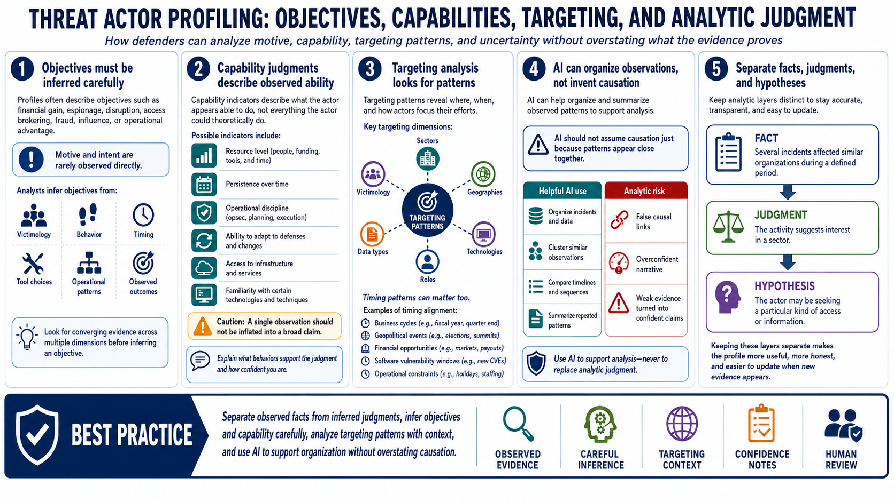

Actor Objectives, Capabilities, and Targeting
Connecting to LMS... Progress: in progress

Narration
Threat actor profiles often describe objectives, capabilities, and targeting. Objectives may include financial gain, espionage, disruption, access brokering, fraud, influence, or operational advantage. Those categories are useful, but they should be inferred carefully. Motive and intent are rarely observed directly. Analysts usually infer them from victimology, behavior, timing, tool choices, operational patterns, and the outcomes the activity appears designed to produce.
Capability indicators describe what the actor appears able to do, not what the actor could theoretically do. Evidence may suggest resource level, persistence over time, operational discipline, ability to adapt, access to infrastructure, or familiarity with certain technologies. A single observation should not be inflated into a broad claim. A profile should explain which behaviors support a capability judgment and how confident the analyst is.
Targeting analysis looks at sectors, geographies, technologies, roles, data types, and victimology. Timing patterns can also matter. Some activity may align with business cycles, geopolitical events, financial opportunities, software vulnerability windows, or operational constraints. AI can help organize these observations, but it should not assume causation just because patterns appear close together.
The safest analytic habit is to separate observed facts from inferred judgments. The fact might be that several incidents affected similar organizations during a defined period. The judgment might be that the activity suggests interest in a sector. The hypothesis might be that the actor is seeking a particular kind of access or information. Keeping those layers separate makes the profile more useful, more honest, and easier to update when new evidence appears.